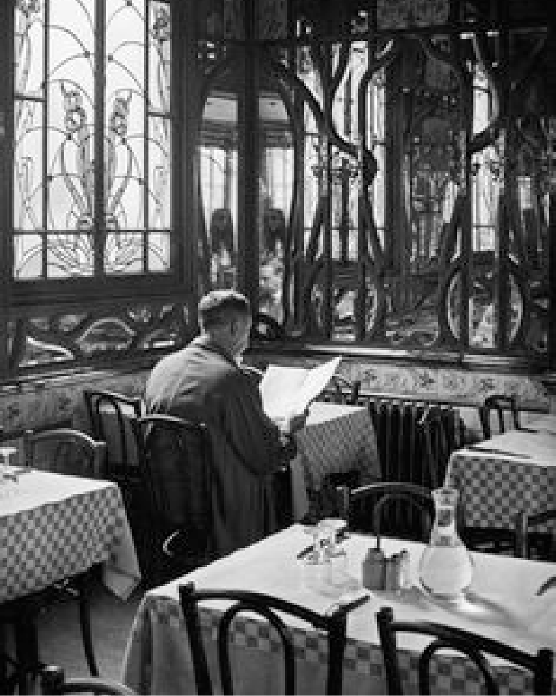

The best rendition of the worlds most popular beverages. Period.
At TEACO, we blend high quality ingredients with expert skill, to produce a coffee and tea experience like no other.

Founded in 1921, by retired French WW1 wartime prime minster Georges Clemenceau, TEACO was the French’s answer to the British dominance in the coffee & tea industry.
Now established with retail locations in 64 countries, TEACO aims bring exemplary coffee & tea to people around the world, making the smaller, one cup at the time.